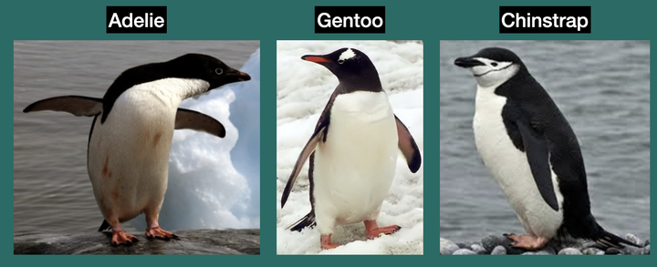

DESCRIPTIVES AND DATA WRANGLING
1. Getting set up 🔧
We will work with the dplyr, tidyr, and palmerpenguins packages. Let’s first call them into our workspace using library().
2. Exploring the penguins dataset and its variables 🔎

You can take a look at the dataset by simply typing its name and printing it as an object (similar to an Excel file):
We can explore the variables we have in the penguins dataset using summary() and glimpse() .
3. Summarizing Numerical Variables 🔢
We can calculate descriptive statistics using the summarize() function. Let’s see what happens when we try to calculate the mean body mass of our penguins:
We were not able to calculate the mean because there are missing values (i.e, NAs) for some of the penguins, so we need to tell mean() to ignore them using the na.rm = TRUE argument.
Your turn!
Now try summarizing the mean for the flipper_length_mm variable without copying and pasting from the code chunk above. 🙂
Workflow with the pipe |>
We can calculate the mean using the pipe workflow, which would pass the penguins dataset as the first argument for summarize() .
We can also give our output a descriptive heading. Type “mean_body_mass” in the blank and see how it gets reflected in the output:
Now, we are ready to calculate all the other descriptive statistics, connected with a comma:
Dropping NA values
Instead of repeating the na.rm = TRUE argument over and over, we can drop all NAs before calculating descriptive statistics. To do this, we will use the drop_na() function:
One final statistic: sample size! The n() function calculates the n size. Unlike other functions, it doesn’t take any arguments. It simply counts how many rows there are.
Grouping by a categorical variable
We often want descriptive statistics to be broken down by levels of a categorical variable, such as the mean language proficiency score broken down by L1 background. The group_by() function will help us with this.
In the code chunk below, add group_by before species so that we can see how body mass changes across penguin species.
Your turn!
Calculate mean flipper_length_mm across islands.
Grouping by multiple categorical variables
We can add more variables of interest separated by a comma. Let’s add the sex variable:
Your turn!
Now, calculate the mean and SD for both bill_length_mm and bill_depth_mm variables broken down by the levels of island:
Creating new variables before calculating descriptive statistics
Suppose that, when summarizing the body_mass_g variable, we wanted to work with kilograms instead of grams. We would have to first create a new variable to make the conversion from grams to kilograms and then calculate the descriptive statistics using this new variable.
mutate() is the function we will use to create new variables.
After you create a new variable, you can use it in other functions:
Your turn!
Now calculate the mean and SD for the flipper_length_mm variable in inches broken down by species variable.
Note that 1 inch is 25.4 mm.
4. Summarizing Categorical Variables (For you to look at later)
Counts
With a categorical variable, we often would like to count how many observations fall into each level of the variable. The easiest way to count observations is to first select() the variable of interest and then feed that variable into table().
We can add more categorical variables while selecting:
Proportions
When examining the proportions in a contingency table, the easiest way is to use the prop.table() functions to turn the counts into proportions:
Caution
What do you notice about how the proportions are calculated?
Row proportions (n/row total)
If you want the denominator to be the row total, set the margin argument to 1.
Column proportions (n/column total)
If you want the denominator to be the column total, set the margin argument to 2.
Overall proportions (n/table total)
When you do not provide the margin argument, the default behavior is to use the table total as the denominator.
Your turn!
Of all penguins that live on the Biscoe island, what proportion of them are female?
5. Application! 🏁
Download the dataset
BEST dataset “presents data from 650 adult participants from the Basque Country who completed a series of Basque, English, and Spanish tests (hence the name BEST) as a proxy for measuring their language skills” (Bruin et al., 2017, p. 2)
Run the following code chunk to download the BEST dataset:
Let’s take a look at some of the variables of interest in the BEST dataset:
| Variable | Definition |
|---|---|
AGE.IN.YEARS |
Participant’s age |
AGE.OF.ACQUISITION.ENGLISH |
The age when English was acquired (Self-reported) |
MAXIMUM.EDUCATIONAL.LEVEL |
High School, University, Postgraduate, Professional Training |
INTERVIEW.MARK.ENGLISH |
Scores ranging from Performance evaluated by four linguists |
Tasks
Answer this question: “On average, how many years have the participants been using English?” Note that we know the participants’ age (i.e.,
AGE.IN.YEARS)and when they acquired English (i.e.,AGE.OF.ACQUISITION.ENGLISH). So, we can create a new variable to answer this question.Update the results so that we can see the average years of English use broken down by
MAXIMUM.EDUCATIONAL.LEVEL.
- Now, let’s see whether English proficiency varies across educational levels. We can summarize
INTERVIEW.MARK.ENGLISHacrossMAXIMUM.EDUCATIONAL.LEVELby calculating the n, mean, SD, min, max, and median.
Caution
BEFORE YOU CLOSE THIS PAGE, SAVE YOUR PROGRESS:
Right-click anywhere on the page
Select Print
Choose Save as PDF